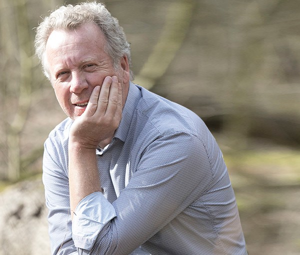
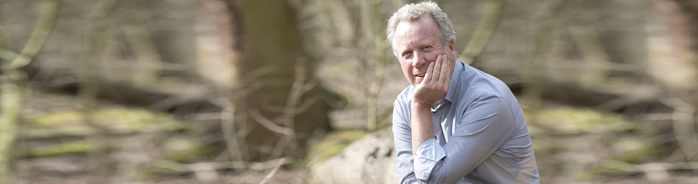

Jullie lopen vast op werk. Samen aan tafel komen jullie er wel uit.
Aad van Dam is arbeidsmediator en doet niets anders. Hij begeleidt het gesprek tussen jou en de ander, onpartijdig, onder geheimhouding en vrijwillig.

Twee kanten, één tafel
Bij arbeidsmediation zijn jullie allebei deelnemer. Aad beslist niets en legt niets op. Hij zorgt dat jullie elkaar kunnen horen, ook als het emotioneel wordt. Jullie bepalen zelf welke oplossing past.
Jij zit met een conflict
Je hebt problemen met een collega, in je team of met je werkgever. Misschien staat je baan op het spel en dreigt ontslag.
- Je kunt vrijuit praten, alles valt onder geheimhouding
- Jij beslist of je meedoet, en je mag altijd stoppen
- Je wordt gehoord, ook de emoties horen erbij
De ander zit er ook middenin
Een conflict tussen werknemer en werkgever, tussen collega's binnen een team of in het bestuur van een organisatie.
- Een neutrale en veilige plek met vaste spelregels
- Aad blijft onafhankelijk en onpartijdig
- Lukt het niet, dan is er exit-mediation
Zo loopt een mediation
Mogelijk zijn enkele gesprekken nodig om tot een oplossing te komen. Elke deelnemer krijgt om beurten de ruimte om zijn of haar verhaal te doen.
-
Intakegesprek
Je spreekt Aad individueel, maximaal een half uur. Hij vertelt hoe mediation werkt. Gratis en zonder verplichting.
-
Mediationovereenkomst
Jullie en de mediator tekenen de overeenkomst. Daarin liggen geheimhouding en spelregels vast. Dan start de mediation officieel.
-
Het gesprek
Aad vat samen, reflecteert, spiegelt en stelt vragen. De werkelijke belangen, zorgen en behoeften komen boven tafel en het conflict de-escaleert.
-
De oplossing
Jullie komen zelf met de oplossing. Zodra jullie het eens zijn, stelt Aad een overeenkomst op met de afspraken die jullie samen ondertekenen.
-
Of uit elkaar, maar goed geregeld
Komen jullie er niet uit, dan gaat de mediation over in exit-mediation. Jullie bespreken onder meer einddatum en transitievergoeding en leggen het vast in een vaststellingsovereenkomst.
Arbeidsmediation doe ik niet als een hobby. Het is niet iets wat je erbij doet om wat extra te verdienen. Het is mijn beroep. Aad van Dam
Fulltime met arbeidsconflicten bezig
Aad werkt met mensen die op hun werk in een conflict zitten en waarvan de baan mogelijk op het spel staat. Zijn doel is dat je daarna weer met plezier naar je werk gaat.
Tijdens zijn carrière reisde en werkte hij met verschillende culturen uit Azië, het Midden-Oosten, Oost-Europa en Zuid-Amerika. Hij behandelt iedereen met integriteit, gelijkheid en respect.
- RegistratieFull certified ADR-registermediator met specialisatie arbeid
- Ook gecertificeerd alsArbitrator, conflict coach, auditor en mentor
- TaalNederlands en Engels, in woord en schrift
- LocatiePaasloweg 17, Hierden

Zit je vast? Bel Aad.
Een eerste gesprek is gratis. Aad vertelt hoe arbeidsmediation werkt en of het bij jullie situatie past.
Bel 06 25 04 15 51- Telefoon
- +31 (0)6 25 04 15 51
- info@vandammediation.nl
- Adres
- Paasloweg 17
3849 RV Hierden